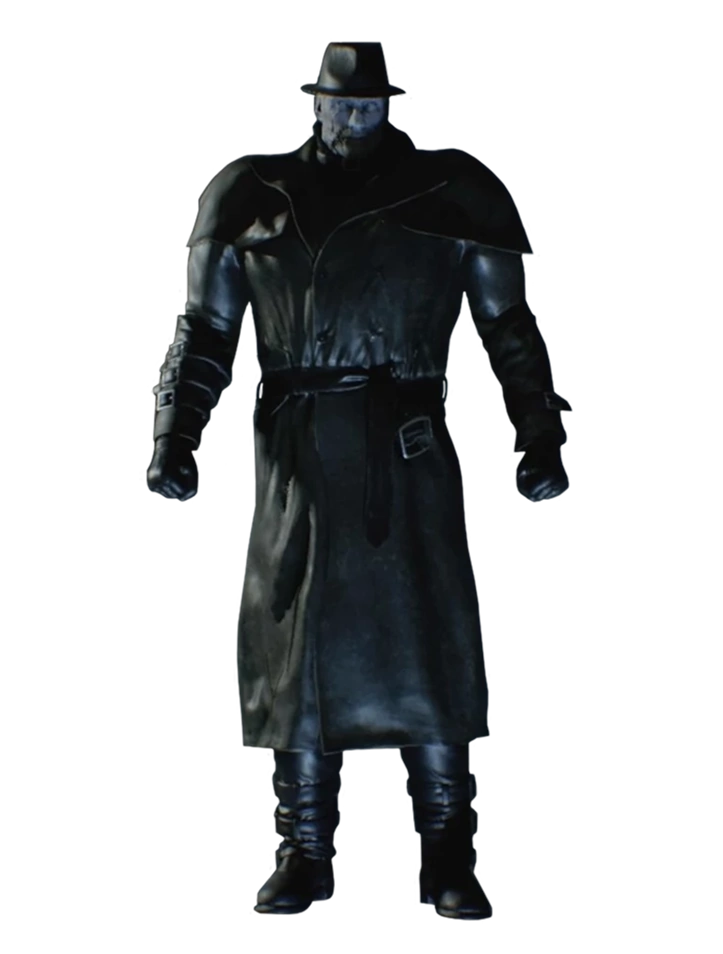

B.O.W.PROTOCOL
LA PEUR CHANGE DE CAMP.
CONFINEMENT ACTIF SECTEUR 01

SUJET EN OBSERVATION
TYRANT
Resident Evil 2 · 2019
01 / 04
LA PEUR CHANGE DE CAMP.

Resident Evil 2 · 2019
LA PEUR CHANGE DE CAMP.
Projet de fan indépendant · Univers et personnages © CAPCOMOUVERTURE DU CONFINEMENT